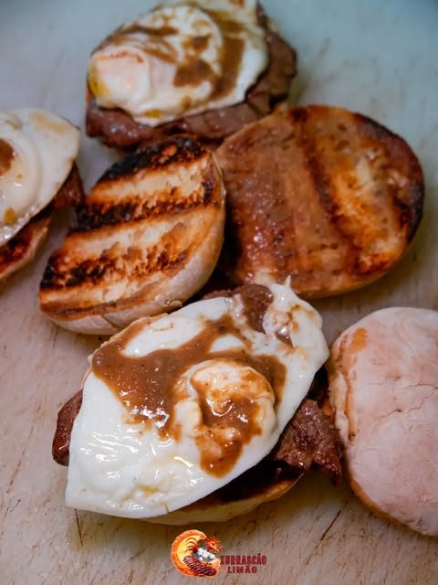
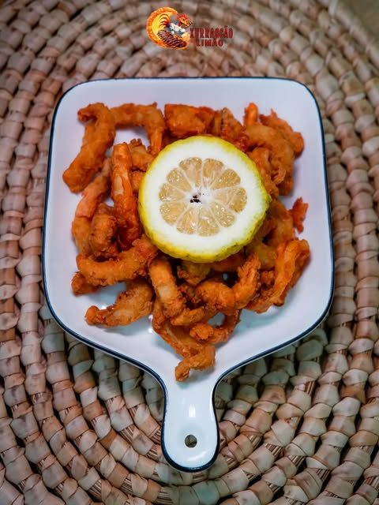
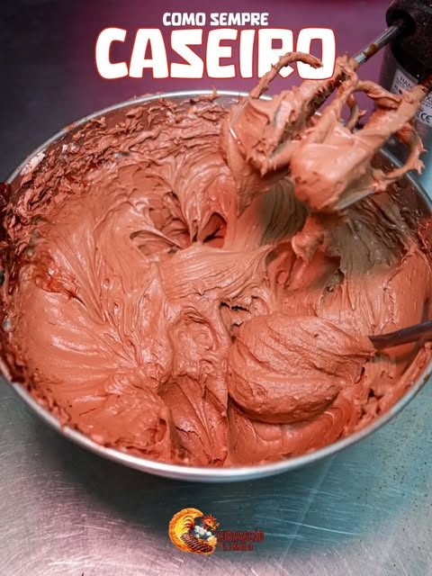
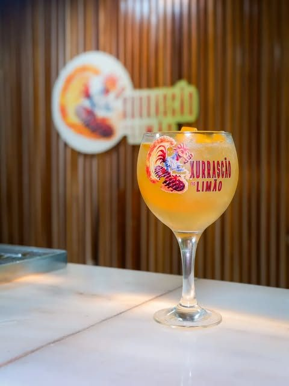

Mais pedido
½ Frango na Brasa à Xurrascão
Frango tenro, marinado na casa e grelhado no carvão, servido com salada algarvia e molhos.
7.500 KzFrango na brasa, picanha, secretos e o nosso famoso prato do dia. Carne suculenta, tempero de casa e aquele toque de limão que faz toda a diferença.
Uma seleção das nossas grelhas mais pedidas. Tudo preparado na hora, no ponto certo.
Frango tenro, marinado na casa e grelhado no carvão, servido com salada algarvia e molhos.
7.500 Kz
Fatias suculentas de entremeada grelhadas no ponto, com aquele toque de limão e piri-piri.
7.500 Kz
Uma tábua generosa de carnes variadas na brasa, ideal para 2 ou 4 pessoas. À mesa ou take away.
desde 20.000 Kz
 Sabor
SaborO Xurrascão no Limão nasceu do gosto por uma boa grelha feita como manda a tradição: carvão, paciência e tempero de casa. Do frango na brasa à picanha, cada prato sai quentinho, no ponto e com aquele inconfundível toque de limão.
Estamos no Lar do Patriota, em Talatona, prontos para o receber à mesa, para take away ou para a sua encomenda. Às quintas, ainda há karaoke a partir das 18h para animar a noite.
Fotos reais direto da nossa brasa e do nosso balcão. Clique para ampliar.





Encomende já pelo WhatsApp ou ligue. Levantamento no restaurante ou take away.